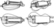

According to Palmer(1980), there are twenty-three different forms throughout the history of the instrument, and there is still no standardized design today. The six-stringed French vielle à roue is the best-known and most common. A number of regional forms developed, but outside France the instrument was considered a folk instrument and there were no schools of construction that could have determined a standard form. There are two primary body styles for contemporary instruments: guitar-bodied and lute-backed. Both forms are found in French-speaking areas, while guitar-bodied instruments are the general form elsewhere. The box form is also commonly found among players of early music and historical re-enactors. 
Lommel, Arle & Nagy, Balázs. (2007). The Form, History, and Classification of the "Tekerőlant" (Hungarian Hurdy-Gurdy). The Galpin Society Journal. 60. 181-189. 10.2307/25163900